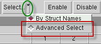

To access: See Usage Notes.
Use this dialog box to give you group and expression-based control over which samples are to be operated on (usually enabled or disabled).
Objects |
Description |
|---|---|
Struct Name |
Selects a sample row based on the entry in the RegExp (regular expression) field. |
Layout Selection |
Selects all structures either Inside or Outside a currently-drawn selection box in the layout viewer. |
Disabled Samples |
Selects all currently disabled samples. |
Measurement |
Selects all sample rows with Measurement column values in the specified range. You can also click the arrow dropdown on the right side of the Measurement field to change search criteria. Other choices are Location, Drawn Mask, Other, and Weight fields. |
Swap Current Selection |
Flips the selection so that all currently selected sample rows are not selected, and all formerly unselected sample rows are selected. |
You can use the Swap Current Selection option to select only enabled gauges by first choosing Disabled Samples, then choosing Swap Current Selection.
In VT5 Center, Sample tab, activate Advanced Select mode by clicking the arrow to the right of the Select button, and choosing the Advanced Select option. The next time you click the Select button, the Sample Selector dialog box appears.
